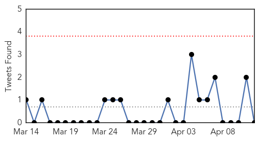
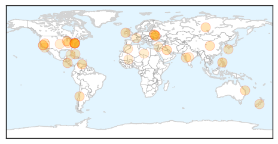
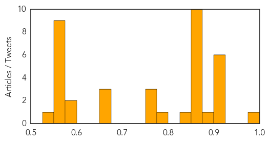

Unknown
30-Day Web Trend
30-Day Twitter Trend
0 alerts, 0 warnings

Article Locations

Article Confidences
Top Articles:
- 0.999
- One foreign health worker dies, five infected with MERS in UAE: agency
- 0.917
- Chicago Tribune
- 0.917
- Chicago Tribune
- 0.917
- Chicago Tribune
- 0.917
- Chicago Tribune
- 0.917
- Chicago Tribune
- 0.903
- TB warning as disease claims 29 lives here in the last three years
- 0.899
- Porcine epidemic diarrhea virus: Death toll is mounting
- 0.870
- Germs' DNA decoded to fight food poisoning Republican American
- 0.866
- Smoke from a forest fire is seen in Valparaiso city
- 0.866
- Remaining cattle released to Nevada rancher after armed standoff -witness
- 0.866
- Biden to visit Kiev to show U.S. support for Ukraine unity -White House
- 0.866
- Magnitude 7.6 earthquake strikes near Solomon Islands -USGS
- 0.866
- Ukraine accuses Russia of 'act of aggression'
- 0.866
- Pro-Russian separatists set up checkpoints around east Ukraine city
- 0.866
- Ukrainian regional police chief steps down
- 0.866
- Magnitude 6.4 quake strikes near Managua in Nicaragua -USGS
- 0.854
- Fluoride set for Maryborough
- 0.828
- U.S. pork sector makes PED research a priority
- 0.787
- Cruise ship passengers sickened on luxury liners
- 0.773
- 48,000 New Zealanders drinking faecally contaminated water
- 0.756
- 90 staffers at Sewri hospital suffering from tuberculosis?
- 0.755
- KRNV, Reno, NV
- 0.672
- More Than 100 Passengers Sick On California Cruise
- 0.662
- Cruise departs despite apprehension over viral outbreak
- 0.653
- Cruise ship passengers sickened on luxury liners
- 0.590
- 50,000 Moroccans suffer from the Parkinson’s Disease
- 0.579
- Three Consecutive Poop Cruises Being Investigated by the CDC
- 0.568
- "Business as usual" not enough in world's efforts to improve sanitation
- 0.568
- "Business as usual" not enough in world's efforts to improve sanitation
- 0.551
- Armed pro-Russia protestors seize two police stations in eastern Ukraine
- 0.551
- Ukraine accuses Russia of ‘aggression’ amid unrest in east
- 0.551
- Syria rebels, government blame each other for new gas attack
- 0.551
- In pictures: Public flocks back to Paris Zoo after six-year break
- 0.551
- France sends first foreign minister to Cuba in 30 years
- 0.551
- Algerian Islamist banned from presidential poll awaits turn
- 0.550
- More salmonella cases
- 0.549
- Mali forms new government
Top Tweets:
-
No tweets found for Apr 12, 2014